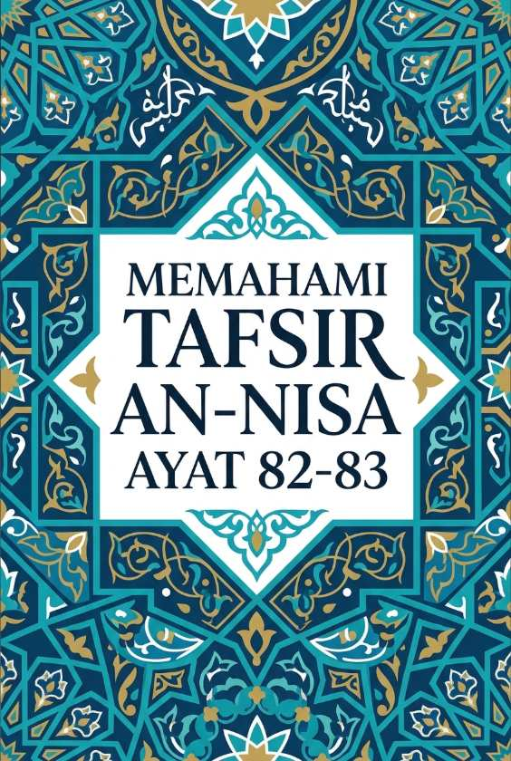

Memahami Tafsir An-Nisa Ayat 82-83
Kuis Interaktif · Bagian 1 dari 1
Tadabbur, Otoritas Informasi, dan Tabayyun
Bagian ini membahas pentingnya merenungkan Al-Qur'an serta etika dalam menyikapi suatu berita.

Kuis Interaktif · Bagian 1 dari 1
Tadabbur, Otoritas Informasi, dan Tabayyun
Bagian ini membahas pentingnya merenungkan Al-Qur'an serta etika dalam menyikapi suatu berita.
"Adanya pertentangan atau kontradiksi di dalam isi Al-Qur'an adalah hal yang wajar karena diturunkan secara bertahap."
Al-Qur'an murni berasal dari sisi Allah SWT dan salah satu bukti keotentikannya adalah tidak ada satu pun pertentangan atau kontradiksi di dalam seluruh isi ayatnya.
Dalil (Q.S. An-Nisa: 82)
أَفَلَا يَتَدَبَّرُونَ الْقُرْآنَ ۚ وَلَوْ كَانَ مِنْ عِنْدِ غَيْرِ اللَّهِ لَوَجَدُوا فِيهِ اخْتِلَافًا كَثِيرًا
"Maka tidakkah mereka menghayati (mendalami) Al-Qur'an? Sekiranya (Al-Qur'an) itu bukan dari sisi Allah, pastilah mereka menemukan banyak pertentangan di dalamnya."
"Kewajiban untuk melakukan tadabbur (merenungkan dan memahami) Al-Qur'an hanya berlaku bagi Rasulullah SAW saja."
Perintah untuk melakukan tadabbur dan merenungkan makna isi Al-Qur'an ditujukan kepada seluruh manusia dan orang-orang mukmin agar mereka mengetahui kebenaran serta kemukjizatannya.
Dalil (Q.S. An-Nisa: 82)
أَفَلَا يَتَدَبَّرُونَ الْقُرْآنَ
"Maka tidakkah mereka menghayati (mendalami) Al-Qur'an?..."
"Setiap kali mendengar berita penting yang menyangkut keamanan atau ketakutan publik, kita dianjurkan untuk segera menyebarluasakannya."
Menyebarkan rumor atau berita penting secara gegabah tanpa proses klarifikasi (tabayyun) sangat dicela dalam Islam karena bisa memicu kepanikan dan kekacauan di tengah masyarakat.
Dalil (Q.S. An-Nisa: 83)
وَإِذَا جَاءَهُمْ أَمْرٌ مِنَ الْأَمْنِ أَوِ الْخَوْفِ أَذَاعُوا بِهِ ۖ وَلَوْ رَدُّوهُ إِلَى الرَّسُولِ وَإِلَىٰ أُولِي الْأَمْرِ مِنْهُمْ لَعَلِمَهُ الَّذِينَ يَسْتَنْبِطُونَهُ مِنْهُمْ
"Dan apabila sampai kepada mereka suatu berita tentang keamanan ataupun ketakutan, mereka (langsung) menyiarkannya. (Padahal) sekiranya mereka menyerahkannya kepada Rasul dan Ulil Amri di antara mereka, tentulah orang-orang yang ingin mengetahui kebenarannya (akan dapat) mengetahuinya dari mereka (Rasul dan Ulil Amri)..."
"Pihak yang memiliki kapasitas dan hak untuk menyaring serta menggali kebenaran (istinbat) dari suatu berita penting adalah Rasul dan Ulil Amri."
Rasul dan Ulil Amri (para ulama serta pemimpin yang kompeten) adalah pihak yang memiliki ilmu, hikmah, dan otoritas resmi untuk menyikapi setiap info strategis secara tepat.
Dalil (Q.S. An-Nisa: 83)
وَلَوْ رَدُّوهُ إِلَى الرَّسُولِ وَإِلَىٰ أُولِي الْأَمْرِ مِنْهُمْ لَعَلِمَهُ الَّذِينَ يَسْتَنْبِطُونَهُ مِنْهُمْ
"...(Padahal) sekiranya mereka menyerahkannya kepada Rasul dan Ulil Amri di antara mereka, tentulah orang-orang yang ingin mengetahui kebenarannya (akan dapat) mengetahuinya dari mereka (Rasul dan Ulil Amri)..."
"Menjaga lisan dari menyebarkan berita bohong (hoaks) dan mengikuti arahan ulama/pemimpin merupakan bentuk perlindungan dari tipu daya setan."
Sikap berhati-hati, taat pada otoritas keilmuan, serta menjauhi spekulasi adalah bagian dari rahmat Allah yang membentengi umat dari kesesatan dan hasutan setan.
Dalil (Q.S. An-Nisa: 83)
وَلَوْلَا فَضْلُ اللَّهِ عَلَيْكُمْ وَرَحْمَتُهُ لَاتَّبَعْتُمُ الشَّيْطَانَ إِلَّا قَلِيلًا
"...Sekiranya bukan karena karunia dan rahmat Allah kepadamu, tentulah kamu mengikuti setan, kecuali sebagian kecil saja (di antaramu)."
Alhamdulillah
Sesi penguatan pemahaman Tafsir Surah An-Nisa ayat 82-83 telah selesai.